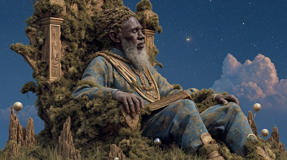

In the final verses of the Dausi, even as Lagadu falls and Bida fades, the spirit of Naa Gbewaa remains. He is not a ghost or a memory — he is an eternal presence, a name that endures like drumbeat in the earth.
Though he died long before the collapse, his wisdom, sacrifice, and sacred foundation became the immortal thread of the Dagomba people. Gbewaa did not need monuments; his legacy was carved in ritual, in soil, in the bloodline of kings. His name is invoked in sacred rites, echoed by griots, and etched into the rhythm of the land itself.
To this day, Naa Gbewaa is not considered dead, but present in the unseen — a guardian spirit, a symbol of just leadership, and the root from which all Dagomba history flows.
The story ends, but Gbewaa continues.
Eternal Gbewaa
The city fell, the throne went cold,
The banners torn, the stories old.
But deep beneath the cracked stone floor,
A name still breathed forevermore.
No fire, no time, no fall can take
The song that gods and griots make.
O Gbewaa, the root, the flame,
Your silence roars through ash and name.
Though walls may break and kings forget,
Your breath lives on — remembered yet.
They speak your name when drums are still,
In midnight chants and ritual will.
The soil may grieve, the rivers mourn,
But through the dust, your light is born.
You rise in tales, in shadowed breath,
A king whose throne outlived his death.
O Gbewaa, the root, the flame,
Your silence roars through ash and name.
Though walls may break and kings forget,
Your breath lives on — remembered yet.
No tomb was built, no grave was laid,
Your soul too vast, your truth unswayed.
In every child, in every song,
The voice of Gbewaa still burns strong.
And when the sky forgets to shine,
Your name shall light the edge of time.
O Gbewaa, the root, the flame,
Your silence roars through ash and name.
Though walls may break and kings forget,
Your breath lives on — remembered yet.
He who walks where death dare not,
He who gave the flame its thought.
Not stone, nor spear, nor time's long breath
Can quiet him who governs death.
So sing his name with sacred sound,
Though Lagadu is buried ground.
For kingdoms fade, and kings decay—
But Gbewaa lives beyond the clay.